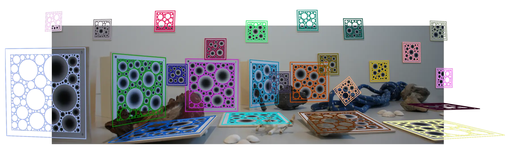
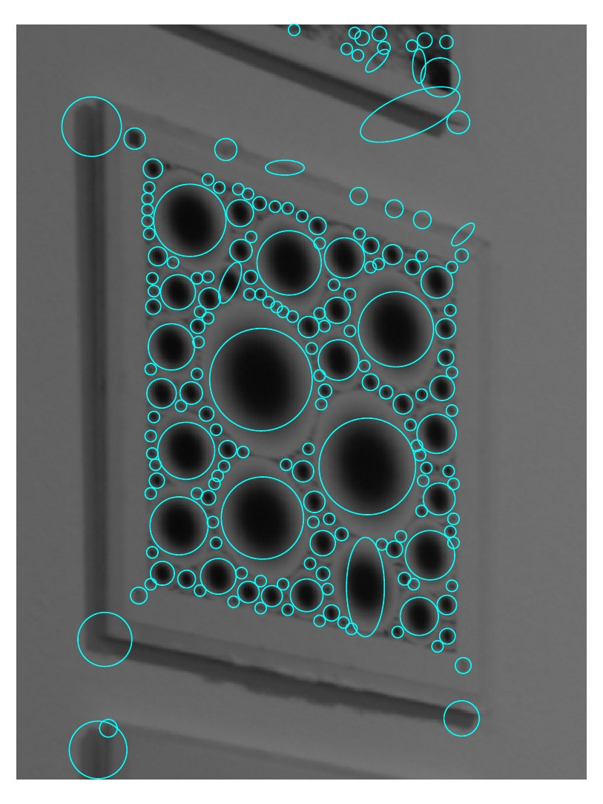
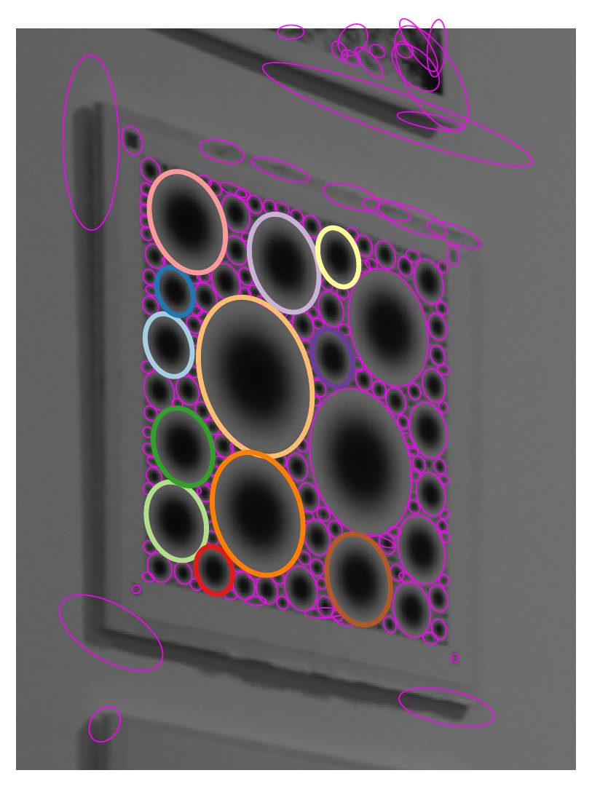
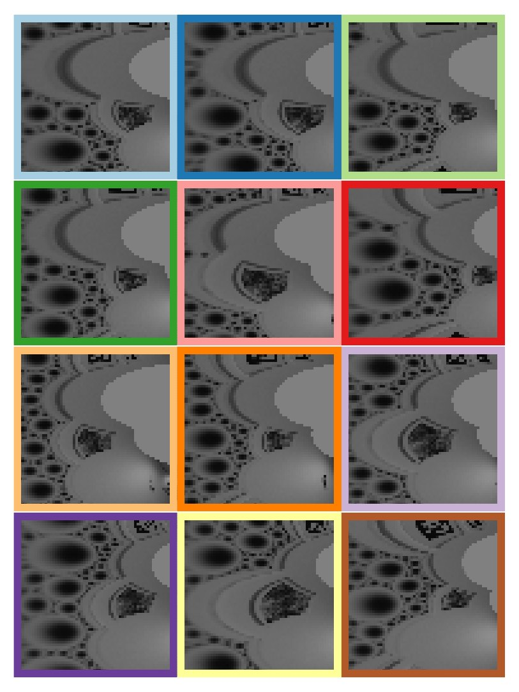
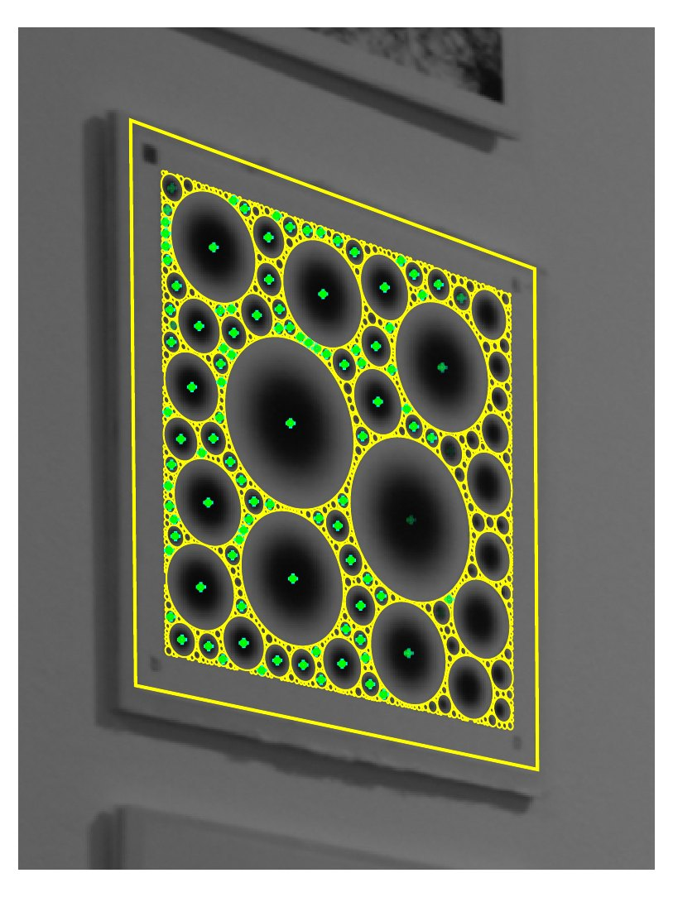

BlobBoards
Robust Markers for Accurate Pose
James Pritts, Till Sittart, Hendrik Sauer, Silja Janßen, Felix Seegräber, David Nakath, Kevin Köser Marine Data Science Kiel University · BMVC 2026

Author a board
blob_board renders a printable PDF board in physical units (mm, dpi) from a seed, with rulers to check the print scale and a JSON sidecar that reproduces it.
Detect boards and estimate pose
find_boards finds every board in an image, identifies it against your gallery, and returns its pose — verified by hundreds of blob correspondences.
Use it from Python
The blobboards package gives the same board authoring and detection in Python, returning NumPy arrays and dataclasses.
A dense, multi-scale field of Gaussian blobs and a feature-based pipeline for joint detection, identification, and pose estimation.
All 25 BlobBoards in the image are detected, identified, and registered against a 50-board gallery — 25 of its entries are absent confusers, and identification is still perfect. Colour distinguishes detections; the overlaid pattern shows registration accuracy across large variations in scale, distance, and obliquity.
Abstract
We propose BlobBoards, a fiducial marker system comprising a dense, multi-scale field of Gaussian blobs and a feature-based pipeline for joint detection, identification, and pose estimation. Each board is registered from hundreds of blob features whose dense spatial coverage constrains pose, while multiple scales preserve detectability across large changes in focal length, distance, and obliquity. Learned local descriptors are matched to the reference pattern and spatially verified, so the correspondences determine pose and certify identity. Against motion-capture ground truth, BlobBoards achieve median translation errors of 3.6–5.0 mm, reducing AprilTag's median translation error by 89% on small boards and 70% on large ones. They also produce far fewer large-rotation failures than state-of-the-art tag systems. BlobBoards achieve the highest detection rate, 80% versus 74% for AprilTag and 58% for ArUco, with the largest margin on the smallest markers. Under 50% occlusion, they still detect 69% of boards with essentially unchanged median translation error, while AprilTag and ArUco detect none.
Install
Copy the command for your language and install method.
Julia
pixi — installs Julia, Python and Ghostscript and resolves the package environment; then using BlobBoards:
git clone https://github.com/prittjam/BlobBoards.jl && cd BlobBoards.jl && pixi install && pixi run julia --project=.Pkg — BlobBoards is published in CauRegistry, not General (Julia 1.12+; Ghostscript for PDF compression):
using Pkg; Pkg.Registry.add(RegistrySpec(url = "git@github.com:prittjam/CauRegistry.jl.git")); Pkg.add("BlobBoards")Python
pixi — installs the blobboards Python package together with the Julia core; the example writes an A4 board to ./output:
git clone https://github.com/prittjam/BlobBoards.jl && cd BlobBoards.jl && pixi install && pixi run python python/examples/boards/generate_a4_board.pypip — installs blobboards with its juliacall and numpy dependencies into your current Python environment:
git clone https://github.com/prittjam/BlobBoards.jl && cd BlobBoards.jl/python && pip install -e .Getting started
Install BlobBoards and generate, print and detect your first board in Getting Started. Authoring boards covers the authoring environment, every board option and printing; Detecting boards covers find_boards, pose estimation and GPU acceleration. The Overview introduces patterns, boards and the coordinate conventions.
using BlobBoards, CairoMakie # CairoMakie loads the board-authoring extension# A4 board at 300 dpi, smallest printed disc 4 mm across → board PDF + JSON in ./outblob_board("A4", 300dpi; blob_sizes = (4.0mm, nothing), seed = 0xBEEF, dir = "./out")# Or a pixel pattern for simulation and trainingblob_pattern(800, 600; blob_sizes = (12px, nothing), seed = 0x1234, dir = "./out")Method
A board is registered from hundreds of blob features, not from four corners — that is where the accuracy and the occlusion robustness come from.
| (a) | (b) | (c) | (d) |
|---|---|---|---|
 |  |  |  |
(a) Detect: affine detections from the ASIFT scale space. (b) Adapt: IRLS adaptation to anisotropic ellipses; the twelve pose inliers are coloured individually. (c) Canonicalize: those inliers mapped to 64×64 log-polar patches. (d) Match & verify: descriptors matched and spatially verified; the pattern projected under the recovered pose, with reference blob centres in green at opacity proportional to their geometric consistency.
- Generate. A seeded pattern packs blobs from several octaves of scale into one field. The same seed reproduces the same board, in Julia or Python.
- Adapt and register. Each detected blob gets a fitted elliptical frame, is canonicalized into a patch, and described by a learned log-polar network. Matches to the reference pattern are spatially verified, so the correspondences determine pose and certify identity.
- Evaluate. Poses are scored against motion-capture ground truth on a rig of boards at a range of sizes, distances, and angles, alongside AprilTag and ArUco.
Results
Against motion-capture ground truth, compared with AprilTag and ArUco on the same rig:
| 80% | boards detected — AprilTag 74%, ArUco 58% — with the largest margin on the smallest markers |
| 3.6–5.0 mm | median translation error, small to large boards |
| −89% | AprilTag's median translation error on small boards (−70% on large ones) |
| 69% | boards still detected at 50% occlusion, with essentially unchanged median translation error; AprilTag and ArUco detect none |
Data & models
The paper's data is frozen on Zenodo; the networks and example data the package ships live on Hugging Face.
- Reproducing the BMVC results. Everything the paper's numbers were computed from is archived at doi:10.5281/zenodo.21998311: the absolute-pose captures with camera calibrations, motion-capture ground truth and hand-eye calibrations; the AprilTag and ArUco baseline detections; the 0–90% occlusion series; the frozen descriptor training set; and the network the reported poses were produced with. It is packaged as sha256-pinned Julia artifact tarballs that
bmvc2026/Artifacts.tomlfetches lazily. - Production networks. blobboards-descriptor holds the ONNX descriptor networks; the package's
Artifacts.tomlis an add-only, commit-pinned catalog of them. blobboards-examples holds the boards, still image and video the bundled examples run on.
Citation
BlobBoards is described in BlobBoards: Robust Markers for Accurate Pose, BMVC 2026 (PDF, with supplementary material). If you use this project for your research, please cite:
@inproceedings{pritts2026blobboards,
author = {Pritts, James and Sittart, Till and Sauer, Hendrik and
Jan{\ss}en, Silja and Seegr{\"a}ber, Felix and
Nakath, David and K{\"o}ser, Kevin},
title = {{BlobBoards}: Robust Markers for Accurate Pose},
booktitle = {British Machine Vision Conference (BMVC)},
year = {2026},
eprint = {2608.28830},
archivePrefix = {arXiv},
}The default homography path needs no additional citation. Two opt-in settings of find_boards run published minimal solvers — if you use one, cite its solver: the calibrated P3P path (PoseGeometry) uses the solver of Ding et al. (CVPR 2023), and the radially distorted homography path (RadialHomographyGeometry) the five-point solver of Wadenbäck et al. (3DV 2026).
@inproceedings{ding2023p3p,
author = {Ding, Yaqing and Yang, Jian and Larsson, Viktor and
Olsson, Carl and {\AA}str{\"o}m, Kalle},
title = {Revisiting the {P3P} Problem},
booktitle = {IEEE/CVF Conference on Computer Vision and Pattern Recognition (CVPR)},
pages = {4872--4880},
year = {2023},
}
@inproceedings{wadenback2026radial,
author = {Wadenb{\"a}ck, M{\aa}rten and Valtonen {\"O}rnhag, Marcus and Edstedt, Johan},
title = {Radially Distorted Homographies, Revisited},
booktitle = {International Conference on 3D Vision (3DV)},
year = {2026},
}Support
Please use the GitHub issue tracker for bug reports, questions, and feature requests. The repository's examples/ directory has runnable Julia scripts for generation, detection, tracking and building training tracks; python/examples/ covers the Python package.
Acknowledgments
James Pritts is funded by Kiel Training for Excellence, an EU Horizon Europe programme under the Marie Skłodowska-Curie Actions (MSCA), grant agreement No. 101081480. The motion-capture setup was funded through the project OP der Zukunft as part of the REACT-EU program and provided by the Kurt Semm Centre for laparoscopic and robot-assisted surgery at the University Hospital of Schleswig-Holstein.